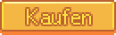

Remixed Bündel
Seit der Version 1.5 existiert bei neuen Spielständen die Option "Remixed" bei den Gemeindezentrum Bündeln zu wählen. Ein Raum kann eine Mischung aus permanenten und zufälligen Bündeln benötigen. Permanente Bündel sind immer vorhanden, die genauen Gegenstände können jedoch leicht von den Standardbündeln abweichen. Zufällige Bündel können vorhanden sein oder fehlen.
Wenn ein Bündelfach mehrere Gegenstände sein kann, werden alle möglichen Gegenstände zusammen in einer Zelle aufgeführt. Nur ein Gegenstand ist im letzten Bündel vorhanden.
Handwerksraum


Der Handwerksraum enthält die erste Gruppe von Bündeln. Die Fertigstellung des Handwerksraumbündel repariert die Brücke östlich der Minen und gibt Zugang zum Steinbruch.
| Handwerksraum Belohnung |
Brückenreparatur |
|---|
Permanente Bündel
 |
Sammeln im Frühling | ||
| Sammeln im Frühling, Kann von Pierre während Blumentanz gekauft werden. | |||
| Sammeln im Frühling | |||
| Sammeln im Frühling, Kann von Pierre während Blumentanz gekauft werden. | |||
| Sammeln im Frühling | |||
 |
Sammeln im Sommer, Herbst Hofarbeit | |||
| Sammeln im Sommer, Die Höhle (Fruchtfledermäuse gewählt) | ||||
| Sammeln im Sommer | ||||
 |
Sammeln im Herbst, Frühling & Sammeln im Herbst in Geheime Wälder, Die Höhle (Pilzzucht gewählt), Anzapfen eines Pilzbaums | ||
| Sammeln im Herbst, Die Höhle (Fruchtfledermäuse gewählt) | |||
| Sammeln im Herbst | |||
| Sammeln im Herbst, Die Höhle (Fruchtfledermäuse gewählt) | |||
 |
Erde oder Artefakt-Orte im Winter Hacken, Beute von blauen Schleimen auf Ebenen 41-79 der Minen | ||
| Sammeln im Winter, Beute von Staubgeistern auf Ebenen 41-79 der Minen | |||
| Erde oder Artefakt-Orte im Winter Hacken | |||
| Sammeln im Winter | |||
| Sammeln im Winter | |||
Zufällige Bündel
(2 zufällig ausgewählt)
 |
Bäume fällen oder Holz hacken. | ||
| Bäume fällen oder Holz hacken. | |||
| Steinabbau mit einer Spitzhacke | |||
| Große Baumstümpfe oder Große Baumstämme mit einer Axt fällen, Kisten in den Minen aufbrechen. | |||
 |
Sammeln in der Wüste | ||
| Sammeln in der Wüste | |||
| Minen, entweder Kisten zerstören oder Erde Hacken | |||
| Sammeln in Minen, Sommer oder Sammeln im Herbst in Geheime Wälder, Die Höhle (Pilzzucht gewählt), Anzapfen eines Pilzbaums, Wald-Hof im Herbst. | |||
| Minen, Die Höhle (Pilzzucht gewählt), Wald-Hof Sammeln im Herbst | |||
| Angezapfter Ahornbaum | |||
| Angezapfte Eiche | |||
| Angezapfte Kiefer | |||
| Sammeln in Geheime Wälder oder Wald-Hof im Frühling, Die Höhle (Pilzzucht gewählt) | |||
 | |||
| Bäume fällen, Beute von Schleimen | |||
 | |||
| Minen, Die Höhle (Pilzzucht gewählt), Wald-Hof Sammeln im Herbst | |||
| Sommer Sammelbares in Geheime Wälder | |||
| Fischen, Monster Beute | |||
| Nutzpflanze während des Sommers | |||
Speisekammer


Die Speisekammer erscheint nachdem ein Bündel abgeschlossen wurde. Durch das Vervollständigen des Speisekammerbündels wird das baufällige Gewächshaus auf deinem Hof wiederhergerichtet. Im Gewächshaus kann man das ganze Jahr über Pflanzen und Obstbäume anwachsen, ohne dass sie bei einer neuen Jahreszeit eingehen.
| Speisekammer Belohnung |
Gewächshaus |
|---|
Permanente Bündel
 |
Nutzpflanze während des Frühlings | ||
| Nutzpflanze während des Frühlings | |||
| Nutzpflanze während des Frühlings | |||
| Nutzpflanze während des Frühlings | |||
 |
Nutzpflanze während des Sommers | ||
| Nutzpflanze während des Sommers | |||
| Nutzpflanze während des Sommers | |||
| Nutzpflanze während des Sommers | |||
 |
Nutzpflanze während des Sommers und Herbstes | ||
| Nutzpflanze während des Herbsts | |||
| Nutzpflanze während des Herbsts | |||
| Nutzpflanze während des Herbsts, Beute von Buddlern auf Ebenen 6-29 der Minen (3%) | |||
Zufällige Bündel
(3 zufällig ausgewählt)
 |
|
Gold-Qualität Nutzpflanze während des Frühlings | |||||||||
|
Gold-Qualität Nutzpflanze während des Sommers | ||||||||||
|
Gold-Qualität Nutzpflanze während des Herbsts | ||||||||||
|
Gold-Qualität Nutzpflanze während des Sommers und Herbstes | ||||||||||
 |
Kühe | ||
| Hühner | |||
| Hühner | |||
| Ziegen | |||
| Schafe, Hasen | |||
| Enten | |||
 |
Hergestellt aus Trüffeln verfeinert mit Ölpresse | ||
| Webstuhl, Recycling einer durchweichten Zeitung, Wüstenhändler | |||
| Käsepresse | |||
| Käsepresse, Wüstenhändler | |||
| Bienenhaus, Oase | |||
| Einmachgefäß | |||
| Apfelbäume im Herbst, Die Höhle (Fruchtfledermäuse gewählt) | |||
| Aprikosenbäume im Frühling, Die Höhle (Fruchtfledermäuse gewählt) | |||
| Orangenbäume im Sommer, Die Höhle (Fruchtfledermäuse gewählt) | |||
| Pfirsichbäume im Sommer, Die Höhle (Fruchtfledermäuse gewählt) | |||
| Granatapfelbäume im Herbst, Die Höhle (Fruchtfledermäuse gewählt) | |||
| Kirschbäume im Frühling, Die Höhle (Fruchtfledermäuse gewählt) | |||
 |
Nutzpflanzen im Frühling / Sommer / Herbst; Saatgut vom Historischen Saatgut erhalten | ||
| Nutzpflanzen während des Herbstes; Seltene Saat verkauft vom Reisewagen | |||
 |
Nutzpflanze während des Frühlings | ||
| Nutzpflanze während des Frühlings | |||
| Nutzpflanze während des Sommers | |||
| Sommer/Nutzpflanze während des Herbsts | |||
| Nutzpflanze während des Herbsts | |||
 |
Fischteich Produkt von vielen Fischen | ||
| Einmachgefäß Produkt von Fischlaich | |||
| Beute von Tintenkindern; Fischteich Produkt vom Tintenfisch und Mitternächtlicher Tintenfisch | |||
 |
Fassprodukt aus Honig | ||
| Fassprodukt aus Hopfen | |||
| Fassprodukt aus Früchten | |||
| Fassprodukt aus Gemüse | |||
| Fassprodukt aus Tee Blättern | |||
Aquarium


Das Aquarium erscheint nach dem Vervollständigen eines (beliebigen) Bündels. Schließt man das Aquarium ab, wird der glitzernde Felsen im Eingangsbereich der Minen entfernt. Willy gibt dem Spieler eine Kupferpfanne, womit man Erze (und andere Gegenstände) aus Flüssen, Seen und dem Ozean sammeln kann..
| Aquarium Belohnung |
Glitzernder Felsen entfernt |
|---|
Permanente Bündel
 |
In Flüssen anzutreffen, 6:00 -19:00 Uhr, Frühling und Sommer bei sonnigem Wetter. Kann im Flussbett-Hof oder dem Wildnis-Hof auch bei Regen im Teich gefunden werden. | ||
| In Flüssen und im Teich des geheimen Waldes anzutreffen 6:00 - 0:00 Uhr, Frühling und Herbst. Nur wenn es regnet. | |||
| In Flüssen anzutreffen, 9:00 - 2:00 Uhr, Frühling, Sommer, und Herbst. Nur wenn es regnet. | |||
| In Flüssen anzutreffen, 6:00 - 19:00 Uhr, Herbst und Winter. | |||
 |
Kann im Bergsee gefunden werden, 6:00 - 19:00 Uhr, Jede Jahreszeit. | ||
| Kann im Bergsee gefunden werden, Jederzeit, im Sommer, Frühling oder Herbst. Teich im Zundersaftwald, Jederzeit, Frühling, Sommer oder Herbst. Teich im Geheimen Wald oder in der Kanalisation, Jederzeit, Jede Jahreszeit. | |||
| Kann im Bergsee gefunden werden, Jederzeit, Jede Jahreszeit. | |||
| Kann im Bergsee gefunden werden, 6:00 - 19:00 Uhr, Sommer und Winter. | |||
 |
Kann im Ozean gefunden werden, 6:00 - 19:00 Uhr, Frühling, Herbst, und Winter. | ||
| Kann im Ozean gefunden werden, 6:00 - 19:00 Uhr, Sommer und Winter. | |||
| Kann im Ozean gefunden werden, 6:00 - 19:00 Uhr, Sommer und Herbst. Nur wenn es regnet. | |||
| Kann im Ozean gefunden werden, 6:00 -2pm, Sommer und Herbst. | |||
 |
In Flüssen, Seen und Waldteich anzutreffen, 12:00 – 2:00 Uhr, Herbst. Nur wenn es regnet. | ||
| In Flüssen anzutreffen, 18:00 – 2:00 Uhr, Jede Jahreszeit. | |||
| Kann im Ozean gefunden werden, 16:00 – 2:00 Uhr, Frühling oder Herbst. Nur wenn es regnet. | |||
Zufällige Bündel
(2 zufällig ausgewählt)
 |
Krabbenreusenfang (Ozean) | ||
| Krabbenreusenfang (Süßwasser) | |||
| Krabbenreusenfang (Ozean), Beute von Stein-Krabben oder Lava-Krabben in den Minen | |||
| Krabbenreusenfang (Ozean), Sammeln am Strand | |||
| Krabbenreusenfang (Ozean), Sammeln am Strand | |||
| Krabbenreusenfang (Ozean) | |||
| Krabbenreusenfang (Süßwasser) | |||
| Krabbenreusenfang (Süßwasser) | |||
| Krabbenreusenfang (Ozean), Sammeln am Strand | |||
| Krabbenreusenfang (Ozean), Sammeln am Strand | |||
 |
Kann im Ozean gefunden werden, 12:00 - 16:00 Uhr, Sommer bei sonnigem Wetter. | ||
| Teiche in den Minen Ebenen 20 und 60, jederzeit, Jede Jahreszeit. Kann auch von Geistern als Beute erhalten werden. | |||
| Teich in der Calico-Wüste, 6:00 - 20:00 Uhr, Jede Jahreszeit. | |||
| Teich in den Geheimen Wäldern und auf dem Wald-Hof, Jederzeit, Jede Jahreszeit. | |||
 |
Minen auf der 100. Ebene zu jeder Jahreszeit | ||
| Calico-Wüste in jeder Jahreszeit | |||
| Sommer im Ozean und (seltener) in Mülleimern, & Angeltour U-Boot beim Nachtmarkt (≈2% Chance). | |||
| Angeltour U-Boot beim Nachtmarkt (15.-17. Winter). | |||
 |
|
Bergsee oder Wildnis-Hof, Jede Jahreszeit | |||||
|
Fluss, während es regnet, Jede Jahreszeit außer Winter | ||||||
|
Ozean, Sommer oder Winter | ||||||
|
Fluss, Bergsee, Waldteich oder Wald-Hof; während es regnet; Herbst (oder Winter mit Regentotem) | ||||||
Heizraum


Der Heizraum erscheint, nachdem zwei Bündel komplettiert wurden. Durch das Abschließen der Heizraumbündel werden die Loren repariert, was dem Spieler eine schnelle Reise zwischen entlegenen Orten von Pelikan Stadt ermöglicht. Die Orte sind die Bushaltestelle, die Minen, der Steinbruch und die Stadt.
| Heizraum Belohnung |
Loren Reparatur |
|---|
Zufällige Bündel
(3 zufällig ausgewählt)
 |
Schmelzen von Kupfererz in einem Schmelzofen | ||
| Schmelzen von Eisenerz in einem Schmelzofen, Herstellung mittels "Umwandeln (Fe)" Rezept | |||
| Schmelzen von Golderz in einem Schmelzofen, Herstellung mittels "Umwandeln (Au)" Rezept | |||
 |
Sammeln auf allen Ebenen der Minen | ||
| Sammeln auf Ebenen 1-39 der Minen, Geoden, Omni-Geoden, Beute von Buddlern in den Minen (Ebenen 1-29) | |||
| Sammeln auf Ebenen 40-79 der Minen, Gefrorene Geoden, Omni-Geoden, Beute von Staubgeistern in den Minen (Ebenen 40-80) | |||
| Sammeln auf Ebenen 80-120 der Minen, Magma-Geoden, Omni-Geoden | |||
 |
Beute von Schleimen | ||
| Beute von Fledermäusen in den Minen | |||
| Beute von Geistern, Tintenkindern oder Metallköpfen in den Minen, Beute von Mumien in der Schädelhöhle | |||
| Beute von Schattenbestien in den Minen oder Giftschlangen in der Schädelhöhle | |||
| Beute von Skelett | |||
 |
Edelsteinader oder individuelle Adern der Mineralien in den Minen; Goldwäsche; Fischschätze | ||
 |
Minen, Schädelhöhle, Omni-Geode | ||
| Blitzableiter, Kauf vom Reisewagen | |||
| Schmelzofen Produkt aus Quarz oder Feuer-Quarz, Recycle-Maschine Produkt einer Zerbrochenen Brille oder Zerbrochenen CD | |||
Schwarzes Brett


Das Schwarze Brett erscheint, nachdem drei Bündel komplettiert wurden.
Durch das Abschließen der Schwarzen Brett Bündel wird die Freundschaft des Spielers mit jedem nicht-heiratbarem Dorfbewohner um zwei Herzen erhöht (500 Punkte). Dorfbewohner, welche noch nicht auf Reiter "Soziales" angezeigt werden, und Bewohner deren Namen als "???" angezeigt werden erhalten keine 500 Freundschaftspunkte.
Am nächsten Morgen wird Bürgermeister Lewis dem Spieler einen Brief schicken, indem steht, dass die Dorfbewohner alle Gegenstände bekommen haben, die sie sich jahrelang wünschten und an das Schwarze Brett im Gemeinschaftszentrum aufgehangen haben. Er teilt seine Dankbarkeit für eure harte Arbeit mit.
Zufällige Bündel
(5 zufällig ausgewählt)
| Schwarzes Brett Belohnung |
Freundschaft ♡ |
|---|
 |
Angezapfter Ahornbaum | ||
| Sammeln im Sommer im Geheimen Wald | |||
| Schweine | |||
| Nutzpflanze während des Sommers | |||
| Kochen (Rezeptquelle: Die Königin der Soßen, Die Kneipe) | |||
| Kochen | |||
 |
| ||||||
| |||||||
| |||||||
| |||||||
| |||||||
| |||||||
 |
Minen, Die Höhle (Pilzzucht gewählt), Sammeln im Wald-Hof im Herbst | ||
| Sammeln während des Winters am Strand (Hinweis: NICHT das Nautilusfossil Artefakt) | |||
| Kann im Bergsee und Flüssen gefunden werden, Jede Jahreszeit, jederzeit. | |||
| Minen Ebenen 40-79 | |||
 |
Nutzpflanze während des Sommers und Herbstes | ||
| Kann bei Marnies Ranch oder dem Wüstenhändler gekauft, oder von Gras oder Weizen geerntet werden. | |||
| Apfelbaum im Herbst, Die Höhle (Fruchtfledermäuse gewählt) | |||
 |
Angezapfte Eiche | ||
| Fass | |||
| Hasen, Beute von Giftschlangen in der Schädelhöhle (0.8%) | |||
| Granatapfelbaum im Herbst, Die Höhle (Fruchtfledermäuse gewählt) | |||
 |
Huhn | ||
| Kuh, Ziege | |||
| Mühlenprodukt aus Weizen, auch erhätlich bei Pierres Gemischtwarenladen | |||
 |
Frühling Sammelbares, nur während des 15.-18. | ||
| Kochrezept; zufälliges Geschenk in Briefen der Mutter oder von Evelyn | |||
| Ausgegrabenes Artefakt aus den Bergen, der Bushaltestelle, dem Zundersaftwald oder der Stadt | |||
| Kochrezept; erhältlich beim Eisstand im Sommer, oder sonntags von der Oase | |||
 |
Frühling Sammelbares, nur während des 15.-18. | ||
| Herbst Sammelbares, ins besondere am 8.-11.; Herbstsaat | |||
| Herbst Sammelbares, Herbstsaat | |||
 |
Belohnung für Hilfsaufträge | ||
| Gefunden durch Fischen, Minenarbeit, Bäume fällen | |||
 |
Purchasable on Geisternacht | ||
| Sommer / Herbst Nutzpflanzen | |||
| Von besiegten Fledermäusen in den Minen oder der Schädelhöhle | |||
 |
Winter Sammeln | ||
| Kochrezept der Königin der Soßen | |||
| Kochrezept von Pams 7 Herz Event | |||
| Winter Nutzpflanzen | |||
Tresor


Der Tresor wird nach der Komplettierung von vier Bündeln freigeschaltet. Die Item-Slots der Bündel sind hierbei mit einem großen Knopf zum Kauf ersetzt. Drückt man nun auf Kauf wird dem Spieler das benötigte Geld abgezogen, insofern genug vorhanden ist.
Das Vollenden der Tresor-Bündel kostet insgesamt  42.500 G, hierdruch wird die Bushaltestelle zwischen deiner Farm und Pelikan Stadt repariert. Mit dem Bus erhält man Zutritt zur Calico-Wüste.
42.500 G, hierdruch wird die Bushaltestelle zwischen deiner Farm und Pelikan Stadt repariert. Mit dem Bus erhält man Zutritt zur Calico-Wüste.
Permanente Bündel
| Tresor Belohnung |
Busreparatur |
|---|
 |

|
 |
|
 |
|
 |
|
Geschichte
- 1.5: Eingeführt.